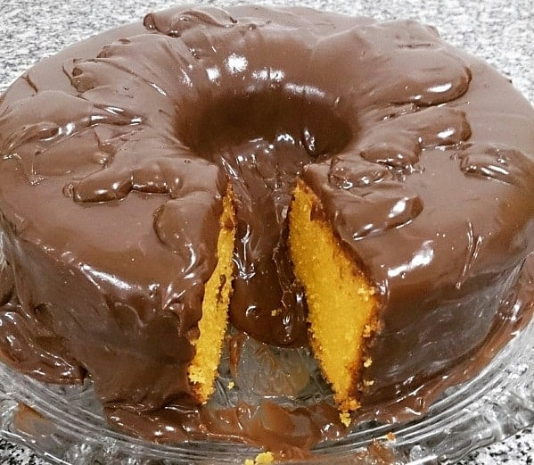

Receita de Bolo de Cenoura
Ingredientes:
- 3 cenouras médias
- 3 ovos
- 2 xícaras de açúcar
- 1 xícara de óleo de canola
- 2 xícaras de farinha de trigo
- 1 pitada de sal
- 1 colher de sopa de fermento químico
Modo de Preparo:
- No liquidificador, coloque 3 cenouras médias, 3 ovos, 1 xícara de óleo de canola e 2 xícaras de açúcar. Bata até ficar homogêneo.
- Em uma tigela, coloque 2 xícaras de farinha de trigo, 1 pitada de sal e 1 colher de sopa de fermento químico. Misture.
- Em seguida, adicione a mistura do liquidificador na tigela.
- Com um fouet, misture até ficar homogêneo.
- Transfira a massa para uma forma untada e enfarinhada.
- Leve para assar em forno preaquecido a 180 graus Celsius por 40 minutos.